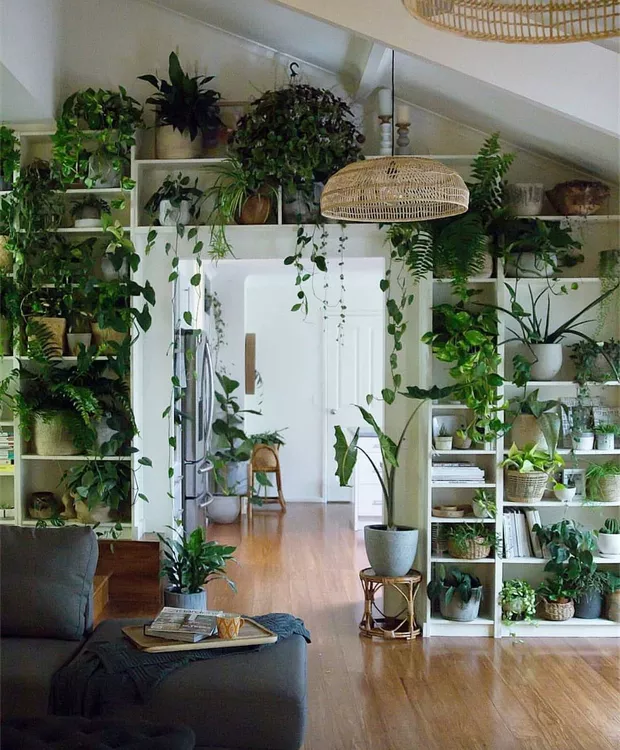

Plantas em casa
Flores e plantas purificam o ar, ou seja, elas têm a capacidade de melhorar a qualidade do ar que você respira. Elas basicamente aumentam o oxigênio, eliminando compostos orgânicos voláteis, que são componentes tóxicos que vêm de tintas de parede, plástico e outros materiais que nos rodeiam.
Além da capacidade de melhorar o ar interno ao remover produtos químicos, as plantas também mantêm níveis adequados de umidade ambiental, pois 97% da água absorvida é devolvida ao ambiente, aumentando até 15% a umidade em ambientes fechados, e entre 3 e 5% nos ambientes ventilados
